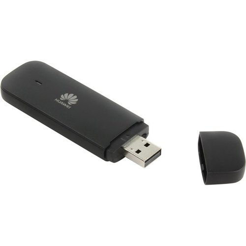
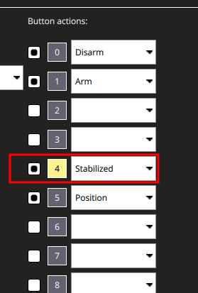
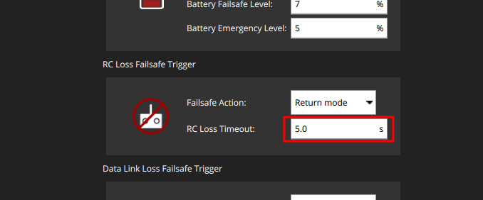
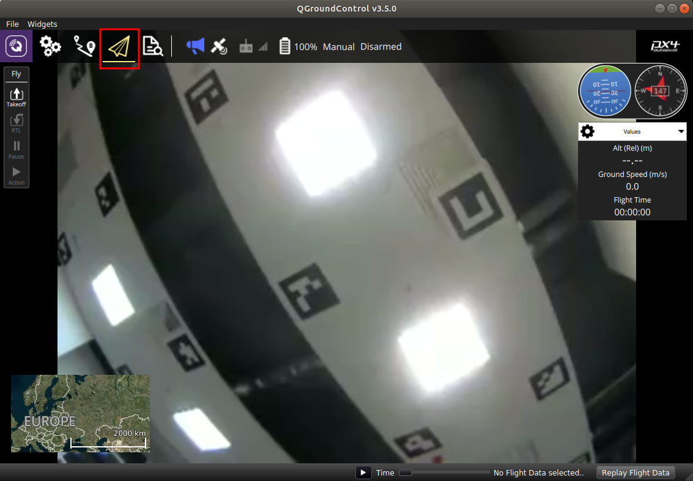

Multi-copter control with 4G communication
The fourth generation mobile communication is a convenient tool for transmitting and receiving information at high speed. Nowadays, the coverage area of mobile operators allows to connect to the Internet at high speed from almost any point.
To transfer any data from your drone to the ground control station (e.g., QGroundControl) and back, you need to set up your own VPN network.
Connecting 4G modem to Raspberry Pi
Connect a 4G modem with SIM card to the USB port of your Raspberry Pi.
When connected, some modems recognize in the system as a network card, without any additional settings.
4G modem example: USB 4G Huawei E3372H

But some other popular modems, for instance Quectel EP06, do not start the internet connection automatic. In this case you should use utilities like qmi-network and udhcpc. To install this utilities enter the appropriate command line:
sudo apt install libqmi-utils udhcpc
Next to start the internet connection proceed following:
sudo ip link set wwan0 down
echo 'Y' | sudo tee /sys/class/net/wwan0/qmi/raw_ip
sudo ip link set wwan0 up
sudo qmi-network /dev/cdc-wdm0 start
sudo udhcpc -q -f -i wwan0
Reed more about it in this article.
To check the internet connection enter the appropriate command line:
ping -I wwan0 -c 5 8.8.8.8
To check the speed of the internet connection you could use the
speedtestutility:sudo apt install speedtest-cli speedtest
Connecting Raspberry Pi to the VPN
Create the VPN network keys to connect Raspberry Pi and the ground station.
To connect Raspberry Pi to your network, install the OpenVPN package:
sudo apt-get install openvpn
Move your keys to the /etc/openvpn/client directory. For convenience, use the graphical SFTP data transfer interface, for example: WinSCP, FileZilla, etc.
To enable the client mode, you must activate the keys you have transmitted. Keys can be generated in various formats, for example: .ovpn, .conf. The key or configuration used on your copter should be strictly in .conf format.
Initialize the service that uses your keys to connect in client mode:
sudo systemctl enable openvpn-client@config-name
where config-name is the name of your configuration file.
If everything is done correctly, every time the system restarts, the service client will automatically connect to your network.
Before starting work, do not forget to set up and enable VPN connection on your PC.
Alternatively we recommend to use the ZeroTier VPN-service.
Copter control via QGroundControl
We suggest using the UDP transfer protocol to control the drone, which provides less delay, at the cost of no guarantee of receiving the package, which is very important during the flight.
Make sure your copter and ground station are connected to your network.
To do this, you can use the command ip addr. The result will be a numbered list of the active networks enabled on your device. Note the connection with the prefix tun and the IP address you specify; if it is present in your list, your copter is connected to the network.
Set up the GCS connection to your drone using the same protocol that is used for your VPN network. The steps are the same as in the Wi-Fi connection article. We recommend using UDP due to lower latency.
If you have a connection to your drone, connect some joystick to your PC. You may use an RC transmitter with a USB port, such as FlySky-i6X, Taranis x7, etc., as well as any analog joystick that is recognized by the system.
When the joystick is recognized by the system, the Joystick item will appear in the Vehicle Setup column. If it is highlighted in red, then calibration is required.
To calibrate the joystick, press the Calibrate button in the Joystick tab and follow the instructions for the sticks position on the left side of the window.
After successful calibration, flight modes must be set up. To do this, switch the required toggle switches several times. During switching, you will see the virtual channels on which the toggle switches operate. One of the channels will be highlighted in the active position.

When selecting the joystick, check the number of working channels and its support in QGroundControl (which uses SDL2, so any joystick supported there should be fine). There are joysticks that support only 4 channels, which are not convenient for this type of control.
If changes to stick positions are reflected in the QGroundControl window, all you have to do is apply a parameter that specifies that the drone is controlled by the joystick, not by the RC:
COM_RC_IN_MODE - Joystick/No RC Checks
Since mobile communication is not always stable, it is recommended to increase the timeout for control signal loss to 5 seconds.

The drone is ready to fly!
If the copter does not arm when you move the left stick to the bottom right corner, set the Arm/Disarm command to one of the switches.
Streaming video from the camera to QGroundControl
You can stream video from almost any camera connected to your Raspberry Pi. You will need to install or build the gst-rtsp-launch package:
sudo apt update
sudo apt install gst-rtsp-launch
To start the transfer of images, you must enter the appropriate command line:
gst-rtsp-launch "( v4l2src device=/dev/video0 ! video/x-raw,framerate=30/1,width=320,height=240 ! videoconvert ! v4l2h264enc output-io-mode=4 extra-controls=\"encode,frame_level_rate_control_enable=1,h264_profile=4,h264_level=13,video_bitrate=300000,h264_i_frame_period=5;\" ! rtph264pay name=pay0 pt=96 )"
This command line contains the parameters of the video stream, such as the source video device, framerate, image height/width, encoding, etc. You can see more examples in the gst-rtsp-launch repository.
A Raspberry Pi camera device
/dev/video0could be used bycloversystemd service. In this casegst-rtsp-launchwill not get an access to the device. For stop thecloverrun commandsudo systemctl stop clover. Also you could stream from a USB-camera, for this change the source video device to/dev/video1.
Make sure the stream by the address rtsp://192.168.11.1:8554/video (the IP-address of your Raspberry Pi could be different) is received and shown in QGroundControl.

Starting video stream automatically
Create a file and add your video stream command line:
nano script_name.sh
In order to run the file, you have to mark it as executable.
chmod a+x script_name.sh
You can use systemd to launch this script every time on system startup. Create the qgc_video.service file in the /etc/systemd/system directory:
sudo nano /etc/systemd/system/qgc_video.service
Put the following in this file:
[Unit]
Description=VideoStream
[Service]
ExecStart=/bin/bash /home/pi/script_name.sh
[Install]
WantedBy=multi-user.target
Enable the script at startup.
sudo systemctl enable qgc_video.service